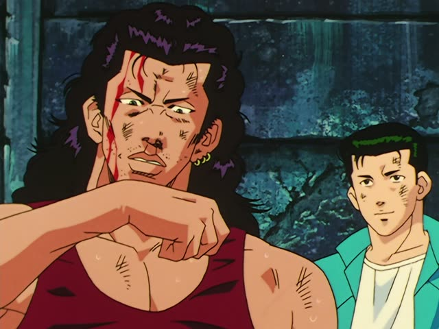

～た方がいい・～ない方がいい
| Polite | ～た方がいいです shouldn't: ～ない方がいいです |
|---|---|
| Casual | ～た方がいい shouldn't: ～ない方がいい |
Same meaning: "you should, you shouldn't". Only the politeness changes.

Shirokuma Cafe · Season 1, Episode 4
読まれたくないなら、非公開にした方がいいですよ。
"If you don't want people reading it, you should make it private."
～た方がいい gives advice: you should, it's better to. Put the verb in its た-form, then 方がいい (方 is read ほう): した + 方がいい. For "you shouldn't", use the ない-form: しない方がいい.
On this card, someone is worried people will read their blog, and gets a simple tip: make it private (非公開).
1 Litre of Tears · Episode 6
断ったほうがいいかも。
"Maybe you should turn him down."
Without です it's casual, and ほう is often written in kana. On this card, 断った + ほうがいい = "you'd better say no", and かも softens it to "maybe".
Quick Examples
A coworker is sneezing at their desk.
今日は早く寝た方がいいですよ。
"You should go to bed early tonight."
PoliteA guest reaches for the tap water at an old mountain hut.
その水は飲まない方がいいです。
"You'd better not drink that water."
Shouldn't: 飲まない (ない-form) + 方がいい.
PoliteYour friend is heading out. The sky looks grey.
傘、持って行った方がいいよ。
"You should take an umbrella."
CasualA friend wants to try a new restaurant you already know.
あの店は行かない方がいい。高いだけだよ。
"Better not go to that place. It's just expensive."
CasualWith and without
早く寝てください。
"Please go to bed early." A request.
早く寝た方がいいですよ。
"You should go to bed early." Advice: it's up to them.
Examples from Media
Kekkon Dekinai Otoko · Episode 2
ちょっと片づけたほうがいいですね。
"We should tidy up a bit."
片づけた + ほうがいいです.
Goblin Slayer · Episode 5
早く体を洗ってきたほうがいいと 思いますよ。
"I think you'd better go wash up soon."
と思います makes the advice softer.

The Journalist · Episode 1
私情で仕事しないほうが いいですよ
"You shouldn't let personal feelings get into your work."
Shouldn't: しない + ほうがいい. 私情: personal feelings.

Mob Psycho 100 · Episode 1
あまり ここに長居しないほうが いいですね
"We'd better not stay here too long."
Shouldn't: 長居しない ("not stay long") + ほうがいい.
Dungeon Meshi · Episode 23
外は見ないほうがいい。
"Better not look outside."
見ない + ほうがいい: you'd better not.
Last Samurai Standing · Episode 5
君は知らないほうがいい。
"It's better you don't know."

Slam Dunk · Episode 35
医者 行った方がいいぞ。
"You'd better see a doctor."

Shirokuma Cafe · Episode 32
行かないほうがいいよ。
"You'd better not go."
ない-form + ほうがいい.
Further Reading
A Dictionary of Basic Japanese Grammar
Entry "hō ga ii" · pp. 138–140
Tae Kim's Guide to Japanese Grammar
Using 「方」 and 「より」 · Using 「方」 for comparisons